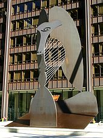

Picasso's training under his father began before 1890. His progress can be traced in the collection of early works now held by the Museu Picasso in Barcelona, which provides one of the most comprehensive records extant of any major artist's beginnings.[17] During 1893 the juvenile quality of his earliest work falls away, and by 1894 his career as a painter can be said to have begun.[18] The academic realism apparent in the works of the mid-1890s is well displayed in The First Communion (1896), a large composition that depicts his sister, Lola. In the same year, at the age of 14, he painted Portrait of Aunt Pepa, a vigorous and dramatic portrait that Juan-Eduardo Cirlot has called "without a doubt one of the greatest in the whole history of Spanish painting."[19]
,_oil_on_canvas,_73_x_54_cm,_Hermitage_Museum,_Saint_Petersburg,_Russia.jpg)
In 1897 his realism became tinged with Symbolist influence, in a series of landscape paintings rendered in non-naturalistic violet and green tones. What some call his Modernist period (1899–1900) followed. His exposure to the work of Rossetti, Steinlen, Toulouse-Lautrec and Edvard Munch, combined with his admiration for favorite old masters such as El Greco, led Picasso to a personal version of modernism in his works of this period.[20]
Picasso made his first trip to Paris, then the art capital of Europe, in 1900. There, he met his first Parisian friend, journalist and poet Max Jacob, who helped Picasso learn the language and its literature. Soon they shared an apartment; Max slept at night while Picasso slept during the day and worked at night. These were times of severe poverty, cold, and desperation. Much of his work was burned to keep the small room warm. During the first five months of 1901, Picasso lived in Madrid, where he and his anarchist friend Francisco de Asís Soler founded the magazine Arte Joven (Young Art), which published five issues. Soler solicited articles and Picasso illustrated the journal, mostly contributing grim cartoons depicting and sympathizing with the state of the poor. The first issue was published on 31 March 1901, by which time the artist had started to sign his work Picasso; before he had signed Pablo Ruiz y Picasso.[21]
Picasso's Blue Period (1901–1904), characterized by somber paintings rendered in shades of blue and blue-green, only occasionally warmed by other colors, began either in Spain in early 1901, or in Paris in the second half of the year.[22] Many paintings of gaunt mothers with children date from the Blue Period, during which Picasso divided his time between Barcelona and Paris. In his austere use of color and sometimes doleful subject matter – prostitutes and beggars are frequent subjects – Picasso was influenced by a trip through Spain and by the suicide of his friend Carlos Casagemas. Starting in autumn of 1901 he painted several posthumous portraits of Casagemas, culminating in the gloomy allegorical painting La Vie (1903), now in the Cleveland Museum of Art.[23]
The same mood pervades the well-known etching The Frugal Repast (1904),[24] which depicts a blind man and a sighted woman, both emaciated, seated at a nearly bare table. Blindness is a recurrent theme in Picasso's works of this period, also represented in The Blindman's Meal (1903, the Metropolitan Museum of Art) and in the portrait of Celestina (1903). Other works include Portrait of Soler and Portrait of Suzanne Bloch.
The Rose Period (1904–1906)[25] is characterized by a more cheery style with orange and pink colors, and featuring many circus people, acrobats and harlequins known in France as saltimbanques. The harlequin, a comedic character usually depicted in checkered patterned clothing, became a personal symbol for Picasso. Picasso met Fernande Olivier, a bohemian artist who became his mistress, in Paris in 1904.[15] Olivier appears in many of his Rose Period paintings, many of which are influenced by his warm relationship with her, in addition to his increased exposure to French painting. The generally upbeat and optimistic mood of paintings in this period is reminiscent of the 1899–1901 period (i.e. just prior to the Blue Period) and 1904 can be considered a transition year between the two periods.

By 1905, Picasso became a favorite of American art collectors Leo and Gertrude Stein. Their older brother Michael Stein and his wife Sarah also became collectors of his work. Picasso painted portraits of both Gertrude Stein and her nephew Allan Stein. Gertrude Stein became Picasso's principal patron, acquiring his drawings and paintings and exhibiting them in her informal Salon at her home in Paris.[27] At one of her gatherings in 1905, he met Henri Matisse, who was to become a lifelong friend and rival. The Steins introduced him to Claribel Cone and her sister Etta who were American art collectors; they also began to acquire Picasso and Matisse's paintings. Eventually Leo Stein moved to Italy. Michael and Sarah Stein became patrons of Matisse, while Gertrude Stein continued to collect Picasso.[28]
In 1907 Picasso joined an art gallery that had recently been opened in Paris by Daniel-Henry Kahnweiler. Kahnweiler was a German art historian and art collector who became one of the premier French art dealers of the 20th century. He was among the first champions of Pablo Picasso, Georges Braque and the Cubism that they jointly developed. Kahnweiler promoted burgeoning artists such as André Derain, Kees van Dongen, Fernand Léger, Juan Gris, Maurice de Vlaminck and several others who had come from all over the globe to live and work in Montparnasse at the time.[29]
Picasso's African-influenced Period (1907–1909) begins with the two figures on the right in his painting, Les Demoiselles d'Avignon, which were inspired by African artefacts. Formal ideas developed during this period lead directly into the Cubist period that follows.

Analytic cubism (1909–1912) is a style of painting Picasso developed with Georges Braque using monochrome brownish and neutral colors. Both artists took apart objects and "analyzed" them in terms of their shapes. Picasso and Braque's paintings at this time share many similarities. Synthetic cubism (1912–1919) was a further development of the genre, in which cut paper fragments – often wallpaper or portions of newspaper pages – were pasted into compositions, marking the first use of collage in fine art.
In Paris, Picasso entertained a distinguished coterie of friends in the Montmartre and Montparnasse quarters, including André Breton, poet Guillaume Apollinaire, writer Alfred Jarry, and Gertrude Stein. Apollinaire was arrested on suspicion of stealing the Mona Lisa from the Louvre in 1911. Apollinaire pointed to his friend Picasso, who was also brought in for questioning, but both were later exonerated.[30]
Between 1915 and 1917, Picasso began a series of paintings depicting highly geometric and minimalist Cubist objects, consisting of either a pipe, a guitar or a glass, with an occasional element of collage. "Hard-edged square-cut diamonds", notes art historian John Richardson, "these gems do not always have upside or downside".[31][32] "We need a new name to designate them," wrote Picasso to Gertrude Stein: Maurice Raynal suggested "Crystal Cubism".[31][33] These "little gems" may have been produced by Picasso in response to critics who had claimed his defection from the movement, through his experimentation with classicism within the so-called return to order following the war.[31][34]
In 1925 the Surrealist writer and poet André Breton declared Picasso as 'one of ours' in his article Le Surréalisme et la peinture, published in Révolution surréaliste. Les Demoiselles was reproduced for the first time in Europe in the same issue. Yet Picasso exhibited Cubist works at the first Surrealist group exhibition in 1925; the concept of 'psychic automatism in its pure state' defined in the Manifeste du surréalisme never appealed to him entirely. He did at the time develop new imagery and formal syntax for expressing himself emotionally, "releasing the violence, the psychic fears and the eroticism that had been largely contained or sublimated since 1909", writes art historian Melissa McQuillan.[39] Although this transition in Picasso's work was informed by Cubism for its spatial relations, "the fusion of ritual and abandon in the imagery recalls the primitivism of the Demoiselles and the elusive psychological resonances of his Symbolist work", writes McQuillan.[39] Surrealism revived Picasso’s attraction to primitivism and eroticism.[39]
During the 1930s, the minotaur replaced the harlequin as a common motif in his work. His use of the minotaur came partly from his contact with the surrealists, who often used it as their symbol, and it appears in Picasso's Guernica. The minotaur and Picasso's mistress Marie-Thérèse Walter are heavily featured in his celebrated Vollard Suite of etchings.[40]
In 1939–40 the Museum of Modern Art in New York City, under its director Alfred Barr, a Picasso enthusiast, held a major retrospective of Picasso's principal works until that time. This exhibition lionized the artist, brought into full public view in America the scope of his artistry, and resulted in a reinterpretation of his work by contemporary art historians and scholars.[41]
Arguably Picasso's most famous work is his depiction of the German bombing of Guernica during the Spanish Civil War – Guernica. This large canvas embodies for many the inhumanity, brutality and hopelessness of war. Asked to explain its symbolism, Picasso said, "It isn't up to the painter to define the symbols. Otherwise it would be better if he wrote them out in so many words! The public who look at the picture must interpret the symbols as they understand them."[42][43]
Guernica was on display in New York's Museum of Modern Art for many years. In 1981, it was returned to Spain and was on exhibit at the Casón del Buen Retiro. In 1992 the painting was put on display in Madrid's Reina Sofía Museum when it opened.
During the Second World War, Picasso remained in Paris while the Germans occupied the city. Picasso's artistic style did not fit the Nazi ideal of art, so he did not exhibit during this time. He was often harassed by the Gestapo. During one search of his apartment, an officer saw a photograph of the painting Guernica. "Did you do that?" the German asked Picasso. "No," he replied, "You did".[44]
Retreating to his studio, he continued to paint, producing works such as the Still Life with Guitar (1942) and The Charnel House (1944–48).[45] Although the Germans outlawed bronze casting in Paris, Picasso continued regardless, using bronze smuggled to him by the French Resistance.[46]
Around this time, Picasso took up writing as an alternative outlet. Between 1935 and 1959 he wrote over 300 poems. Largely untitled except for a date and sometimes the location of where it was written (for example "Paris 16 May 1936"), these works were gustatory, erotic and at times scatological, as were his two full-length plays Desire Caught by the Tail (1941) and The Four Little Girls (1949).[48][49]
In 1944, after the liberation of Paris, Picasso, then 63 years old, began a romantic relationship with a young art student named Françoise Gilot. She was 40 years younger than he was. Picasso grew tired of his mistress Dora Maar; Picasso and Gilot began to live together. Eventually they had two children: Claude, born in 1947 and Paloma, born in 1949. In her 1964 book Life with Picasso,[50] Gilot describes his abusive treatment and myriad infidelities which led her to leave him, taking the children with her. This was a severe blow to Picasso.
Picasso had affairs with women of an even greater age disparity than his and Gilot's. While still involved with Gilot, in 1951 Picasso had a six-week affair with Geneviève Laporte, who was four years younger than Gilot. By his 70s, many paintings, ink drawings and prints have as their theme an old, grotesque dwarf as the doting lover of a beautiful young model. Jacqueline Roque (1927–1986) worked at the Madoura Pottery in Vallauris on the French Riviera, where Picasso made and painted ceramics. She became his lover, and then his second wife in 1961. The two were together for the remainder of Picasso's life.
His marriage to Roque was also a means of revenge against Gilot; with Picasso's encouragement, Gilot had divorced her then husband, Luc Simon, with the plan to marry Picasso to secure the rights of her children as Picasso's legitimate heirs. Picasso had already secretly married Roque, after Gilot had filed for divorce. His strained relationship with Claude and Paloma was never healed.[51]
By this time, Picasso had constructed a huge Gothic home, and could afford large villas in the south of France, such as Mas Notre-Dame-de-Vie on the outskirts of Mougins, and in the Provence-Alpes-Côte d'Azur. He was an international celebrity, with often as much interest in his personal life as his art.
In addition to his artistic accomplishments, Picasso made a few film appearances, always as himself, including a cameo in Jean Cocteau's Testament of Orpheus. In 1955 he helped make the film Le Mystère Picasso (The Mystery of Picasso) directed by Henri-Georges Clouzot.
Picasso was one of 250 sculptors who exhibited in the 3rd Sculpture International held at the Philadelphia Museum of Art in mid-1949. In the 1950s, Picasso's style changed once again, as he took to producing reinterpretations of the art of the great masters. He made a series of works based on Velázquez's painting of Las Meninas. He also based paintings on works by Goya, Poussin, Manet, Courbet and Delacroix.
He was commissioned to make a maquette for a huge 50-foot (15 m)-high public sculpture to be built in Chicago, known usually as the Chicago Picasso. He approached the project with a great deal of enthusiasm, designing a sculpture which was ambiguous and somewhat controversial. What the figure represents is not known; it could be a bird, a horse, a woman or a totally abstract shape. The sculpture, one of the most recognizable landmarks in downtown Chicago, was unveiled in 1967. Picasso refused to be paid $100,000 for it, donating it to the people of the city.
Picasso's final works were a mixture of styles, his means of expression in constant flux until the end of his life. Devoting his full energies to his work, Picasso became more daring, his works more colorful and expressive, and from 1968 to 1971 he produced a torrent of paintings and hundreds of copperplate etchings. At the time these works were dismissed by most as pornographic fantasies of an impotent old man or the slapdash works of an artist who was past his prime. Only later, after Picasso's death, when the rest of the art world had moved on from abstract expressionism, did the critical community come to see that Picasso had already discovered Neo-Expressionism and was, as so often before, ahead of his time.